|
4-3-3
|
Mexico | 1 | - | 0 | Korea Republic |
3-4-2-1
|
| HT 0-0 | ||||||
|
FIFA World CupFriday 19 June 2026
|
||||||
- Venue
- Estadio Guadalajara
- Attendance
- 45,522
- Referee
- Gustavo Adrian Tejera Capo
Goal50'
L. Romo
- 2
Substitution71'
B. Gutiérrez
O. Pineda
L. Romo
O. Vargas
- 2
Substitution80'
R. Alvarado
I. Reyes
R. Jiménez
S. Giménez
Substitution84'
J. Quiñones
C. Huerta
Whistle45+5'
45+5'
Yellow card4'
Lee Kang-In
- 2
Substitution57'
Lee Jae-Sung
Hwang Hee-Chan
Son Heung-Min
Oh Hyeon-Gyu
Yellow card58'
Paik Seung-Ho
- 2
Substitution71'
Kim Moon-Hwan
Eom Ji-Sung
Seol Young-Woo
Yang Hyun-Jun
Substitution77'
Paik Seung-Ho
Cho Gue-Sung
Mexico | |
|---|---|
Goalkeeper | |
| 1 | R. Rangel |
Defender | |
| 2 | J. Sánchez |
| 4 | E. Álvarez |
| 5 | J. Vásquez |
| 23 | J. Gallardo |
Midfielder | |
| 6 | É. Lira |
| 7 | L. Romo 50'71' |
| 26 | B. Gutiérrez 71' |
Forward | |
| 9 | R. Jiménez 80' |
| 16 | J. Quiñones 84' |
| 25 | R. Alvarado 80' |
Substitutes | |
| 11 | S. Giménez 80' |
| 15 | I. Reyes 80' |
| 17 | O. Pineda 71' |
| 18 | O. Vargas 71' |
| 21 | C. Huerta 84' |
Korea Republic | |
Goalkeeper | |
| 1 | Kim Seung-Gyu |
Defender | |
| 2 | Lee Han-Beom |
| 3 | Lee Gi-Hyuk |
| 4 | Kim Min-Jae |
Midfielder | |
| 6 | Hwang In-Beom |
| 8 | Paik Seung-Ho 58'77' |
| 10 | Lee Jae-Sung 57' |
| 15 | Kim Moon-Hwan 71' |
| 19 | Lee Kang-In 4' |
| 22 | Seol Young-Woo 71' |
Forward | |
| 7 | Son Heung-Min 57' |
Substitutes | |
| 9 | Cho Gue-Sung 77' |
| 11 | Hwang Hee-Chan 57' |
| 18 | Oh Hyeon-Gyu 57' |
| 20 | Yang Hyun-Jun 71' |
| 25 | Eom Ji-Sung 71' |


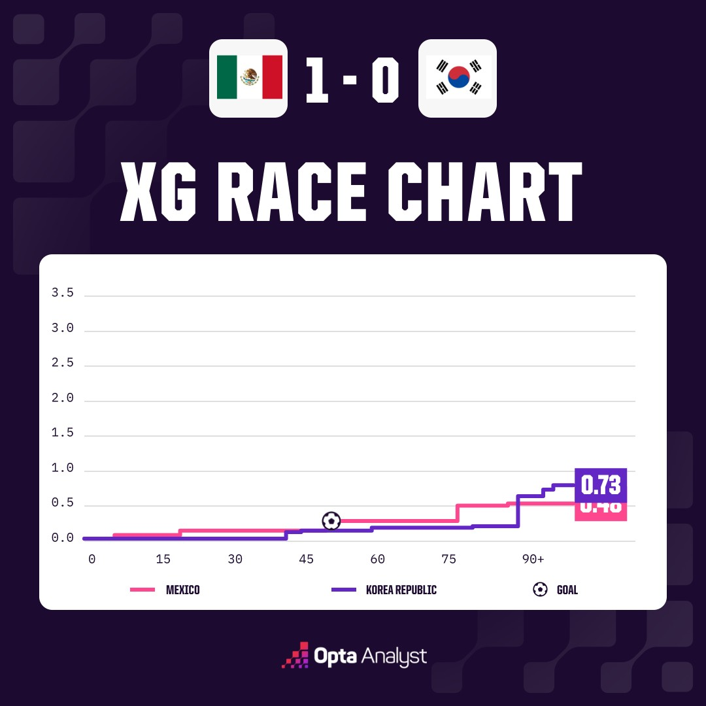
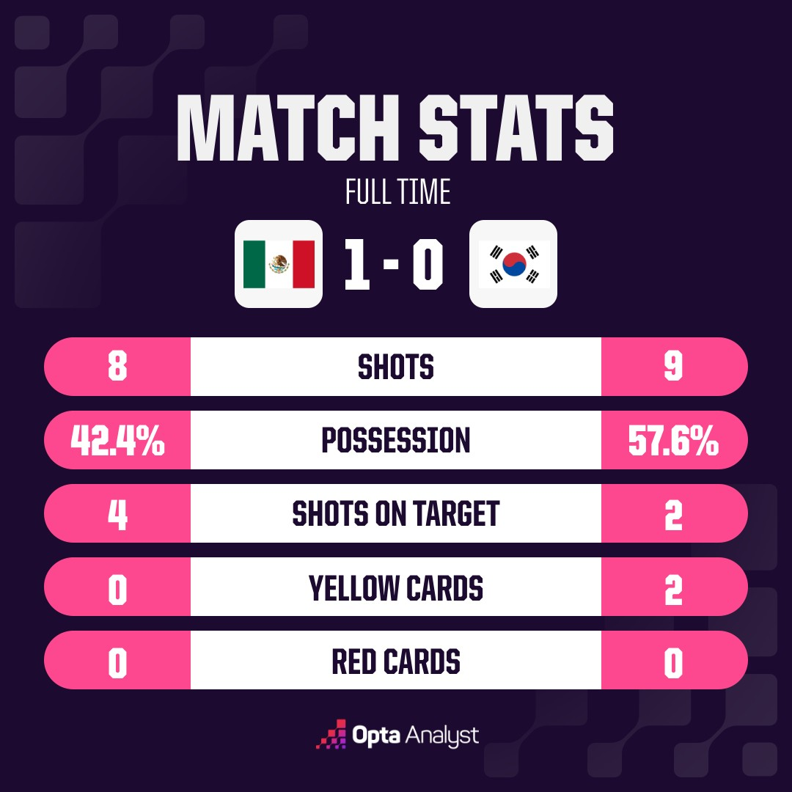
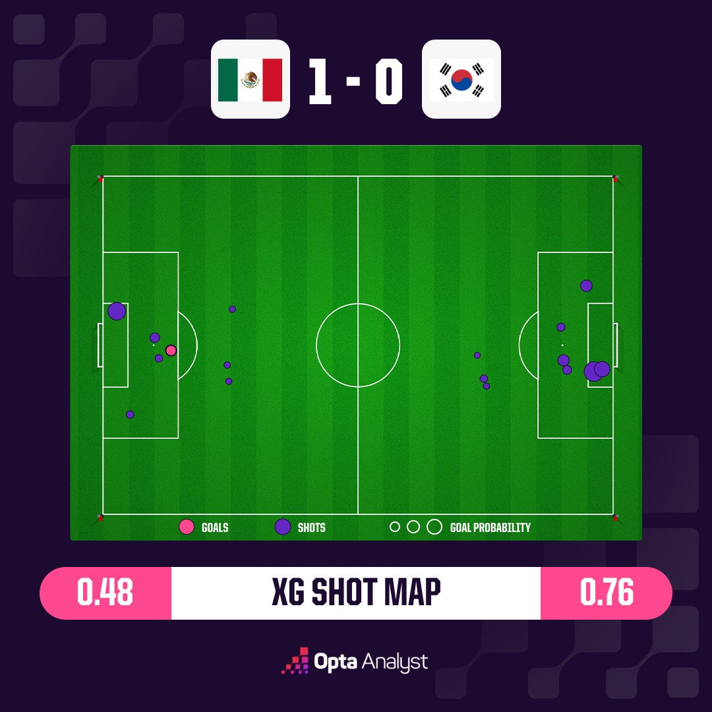
90+7'
FULL-TIME! The referee sounds the final whistle, and it’s all over. Mexico get the win, with a 1-0 triumph over Korea Rep.
90+4'
A chance goes begging as Oh Hyeon-Gyu gets off a shot that does not hit the target. They might have done better with that one, but instead it is a goal-kick to Mexico.
90+4'
Cho Gue-Sung's effort is deflected out for a corner. Can Korea Rep make anything of this set-piece?
90+3'
It’s backs to the wall now — Mexico throwing everything into defending their advantage, with a flurry of crucial interventions.
90+2'
WHAT A MISS! Oh dear, oh dear, that is an awful attempt from Lee Han-Beom, as a huge chance for Korea Rep to score the goal they need goes begging. What a let off for Mexico, though. They will have to defend better than that from here on out!
90+2'
Corner! The ball goes behind and now Korea Rep will aim to deliver a good ball into the penalty area and test that Mexico defence, which has been frustrating them in recent minutes.
90+1'
Korea Rep are having plenty of the ball, with 66.67% possession in the last 15 minutes. However, they have been unable to transfer that possessional dominance into a goal during that period.
87'
What a miss! That was a huge chance for Yang Hyun-Jun, but they have failed to convert. What an opportunity that was for Korea Rep.
87'
WHAT A MISS! Oh dear, oh dear, that is an awful attempt from Cho Gue-Sung, as a huge chance for Korea Rep to score the goal they need goes begging. What a let off for Mexico, though. They will have to defend better than that from here on out!
86'
It's all hands on deck for Mexico as they defend their lead, making a wave of critical blocks and clearances
85'
Obed Vargas goes for goal with a strike from distance, but Kim Seung-Gyu is able to watch it all the way and make the save. A bit of a tester, there.
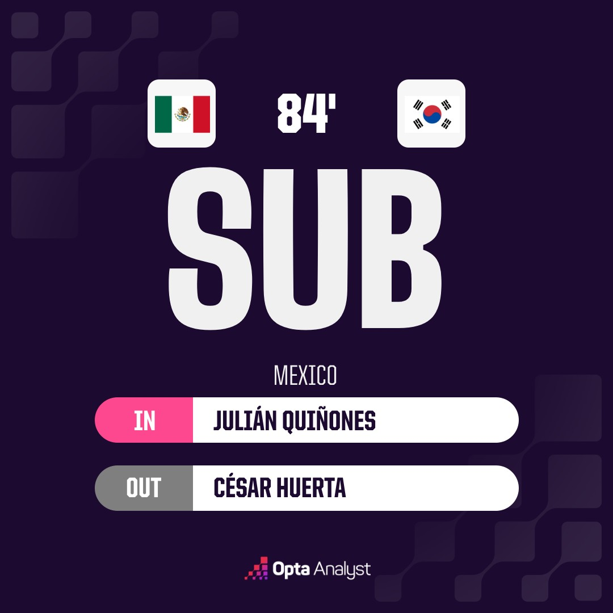
84'
Substitution! César Huerta replaces Julián Quiñones for Mexico as the manager shuffles the pack. Can César Huerta make an impression as this match continues?
82'
A free-kick to Korea Rep, as Israel Reyes goes in and fouls Hwang Hee-Chan. However, Mexico will not mind giving one away in this area too much, with plenty of distance to their goal.
80'
The Mexico manager is looking to the substitutes’ bench, bringing on Santiago Giménez in place of Raúl Jiménez. Will the change make a difference? Let’s find out!
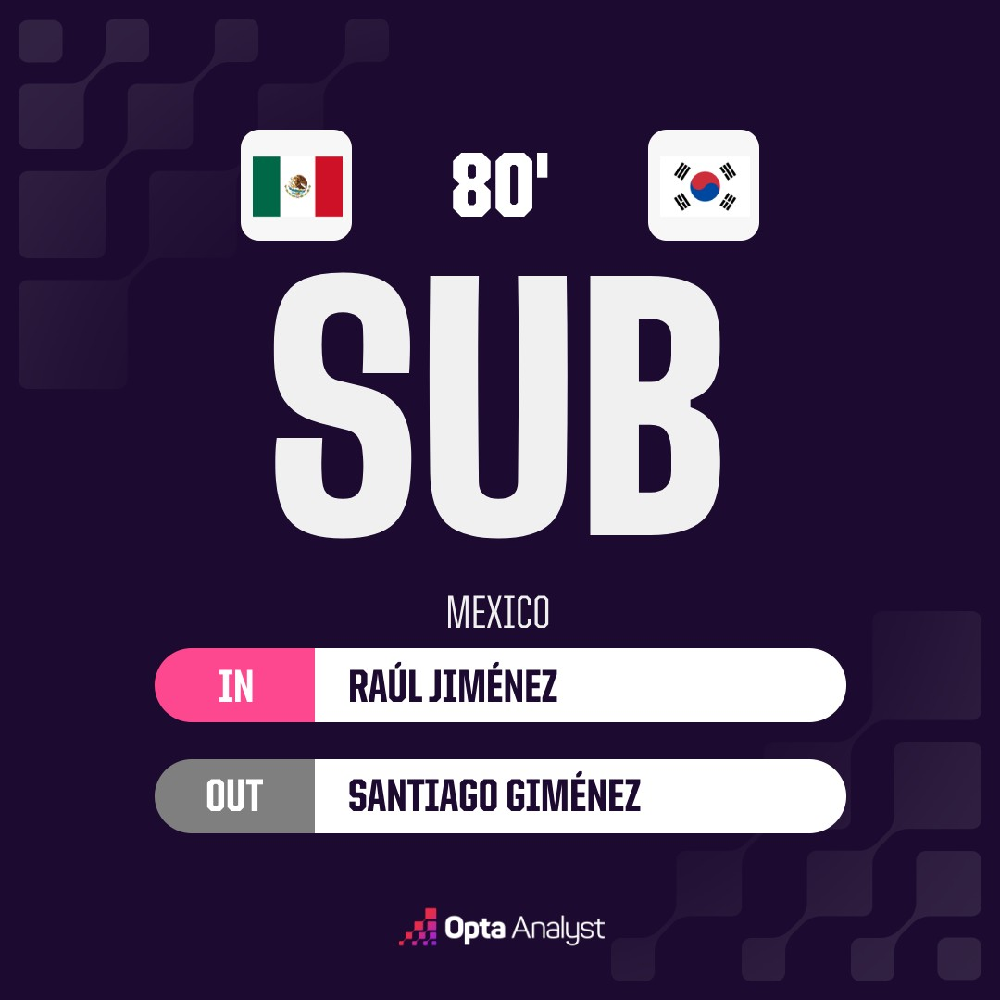
80'
The Mexico manager is looking to the substitutes’ bench, bringing on Israel Reyes in place of Roberto Alvarado. Will the change make a difference? Let’s find out!
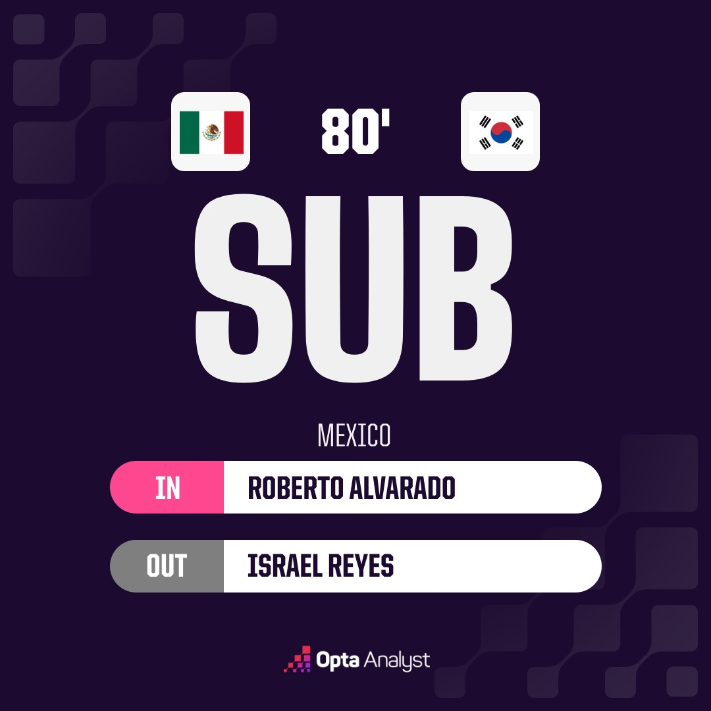
78'
MISS! The score remains 0-1, with Mexico relieved after Korea Rep’s Lee Kang-In goes for goal but sends their attempt off target. Not one to write home about, that one.
78'
Still behind, but Korea Rep are refusing to roll over - defensive urgency rising as they fend off more pressure and push for a late turnaround.
77'
Substitution! Cho Gue-Sung replaces Paik Seung-Ho for Korea Rep as the manager shuffles the pack. Can Cho Gue-Sung make an impression as this match continues?
76'
Offside! Well-timed defensive work from Mexico, as their back line steps up and catches Yang Hyun-Jun offside. They had just strayed too early, as Korea Rep search for the goal they need.
75'
A rash challenge from Raúl Jiménez, who sends Eom Ji-Sung tumbling, giving Korea Rep a free-kick. It is not in a threatening position, but it gives them a chance to get back on the ball.
75'
Oh no! That should have been in! Raúl Jiménez was through but could not keep their composure when it mattered most. Mexico still lead, but they have not been able to extend it. Will that be the good fortune Korea Republic need?
73'
A foul from Yang Hyun-Jun on Jesús Gallardo sees Mexico win a free-kick, but it is not in a dangerous position, so Korea Rep should be confident they can defend it easily enough.
73'
Plenty of the ball in the last quarter-of-an-hour of this match for Korea Rep, but Mexico have been able to hold them off with ease, with Korea Rep having failed to even muster a shot at goal.
71'
Korea Rep are making a tactical change. Seol Young-Woo is leaving the field and in their place comes Yang Hyun-Jun – we will soon see if this switch has the desired impact.
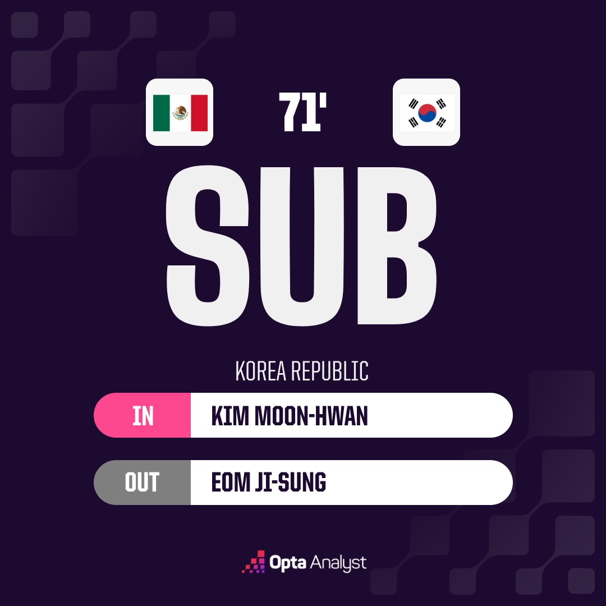
71'
Kim Moon-Hwan’s match is over as Korea Rep decide to make a substitution. Eom Ji-Sung enters the field in what looks like a tactical change.
71'
The Mexico manager is looking to the substitutes’ bench, bringing on Obed Vargas in place of Luis Romo. Will the change make a difference? Let’s find out!
71'
Mexico are making a tactical change. Brian Gutiérrez is leaving the field and in their place comes Orbelín Pineda – we will soon see if this switch has the desired impact.
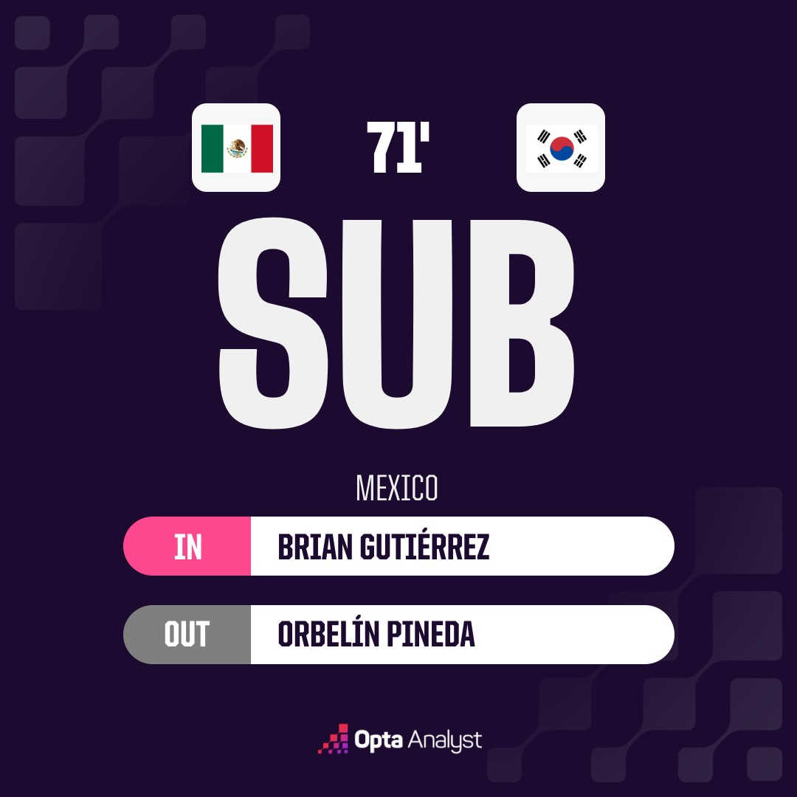
70'
Neither team has had a shot in the past 10 minutes, as this match just enters something of a down period. Korea Rep have seen more of the ball, with 65 per cent possession, but Mexico are keeping them away from goal. There is still a chance the match will spark into life, though.
66'
With 65 minutes gone, it is Mexico who lead the shot count, with 6 to Korea Rep’s 3. Mexico have got 2 on target, while Korea Rep have managed to get 0 on target.
65'
Korea Rep are having plenty of the ball, with 72.93% possession in the last 15 minutes. However, they have been unable to transfer that possessional dominance into a goal during that period.
64'
A free-kick to Mexico, as Lee Han-Beom goes in and fouls Raúl Jiménez. However, Korea Rep will not mind giving one away in this area too much, with plenty of distance to their goal.
62'
Raúl Jiménez goes in on Lee Han-Beom and concedes a foul. The free-kick is not in a particularly dangerous area from Mexico’s viewpoint, though.
61'
The Mexico defence steps up in time and there is a frustration for Seol Young-Woo, who thought they were through until the flag goes up to signal offside.
58'
Yellow card! Paik Seung-Ho will have to be careful from now on after they are cautioned.
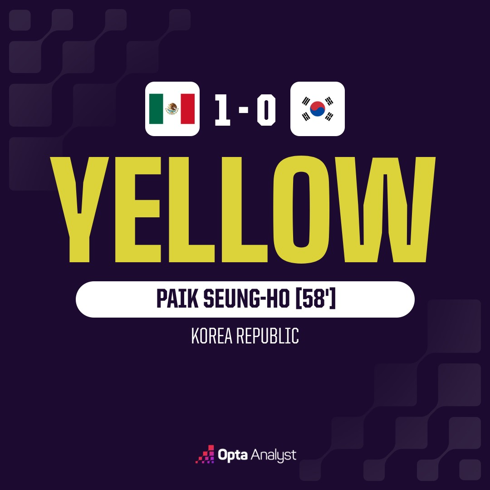
58'
A rash challenge from Paik Seung-Ho, who sends Brian Gutiérrez tumbling, giving Mexico a free-kick. It is not in a threatening position, but it gives them a chance to get back on the ball.
58'
Shot blocked! Hwang In-Beom unleashes an attempt at goal, but the ball does not reach its target thanks to Johan Vásquez, who makes a solid block to stem the danger – for now.
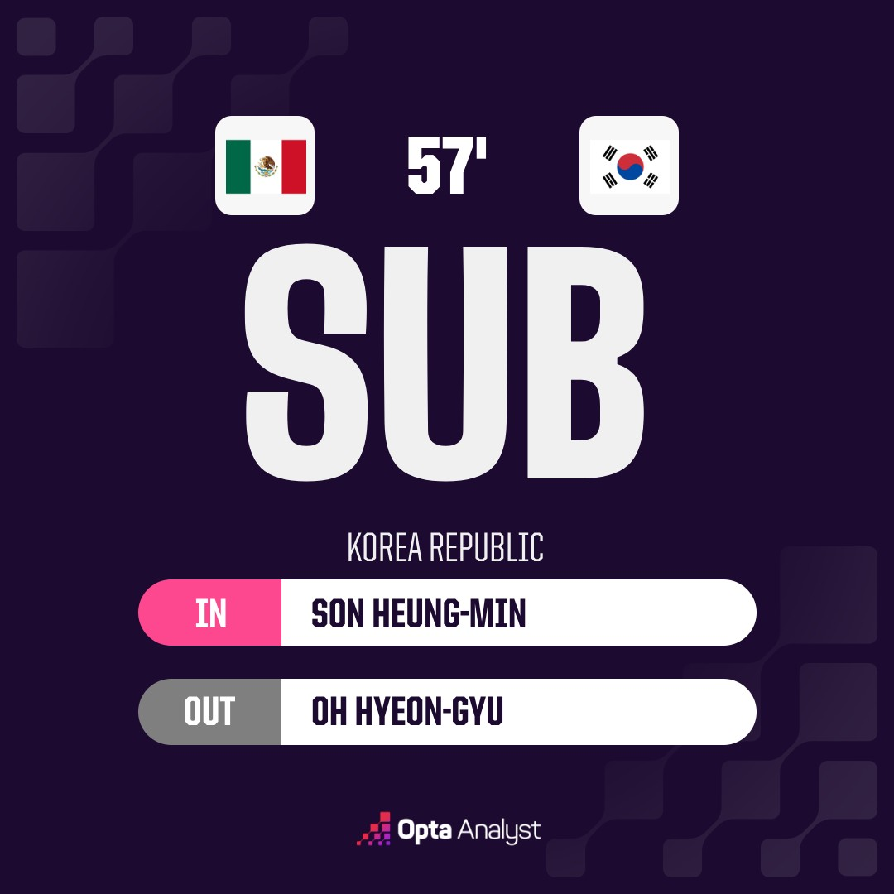
57'
Son Heung-Min’s match is over as Korea Rep decide to make a substitution. Oh Hyeon-Gyu enters the field in what looks like a tactical change.
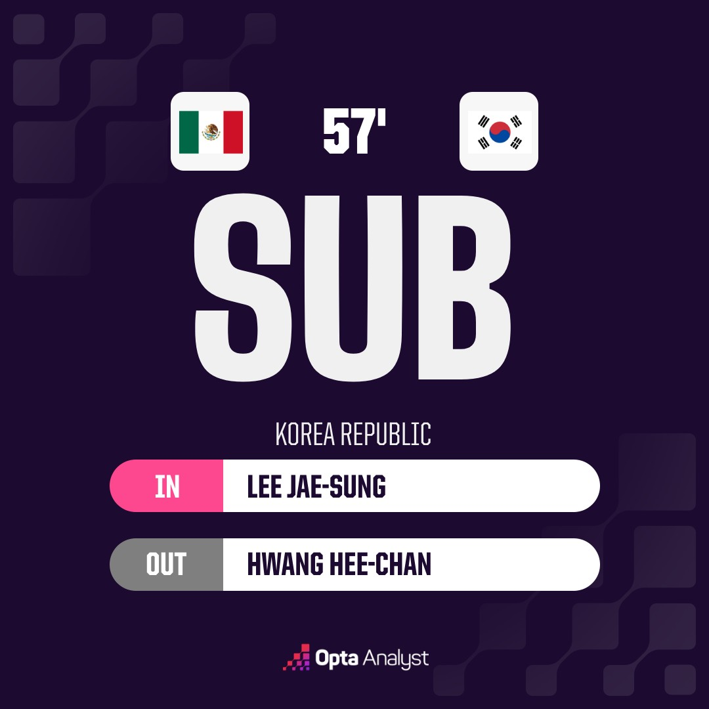
57'
A substitution for Korea Rep sees Lee Jae-Sung replaced by Hwang Hee-Chan. There does not appear to be any obvious sign of an injury, so that is a tactical switch.
57'
Julián Quiñones goes in on Son Heung-Min and concedes a foul. The free-kick is not in a particularly dangerous area from Mexico’s viewpoint, though.
56'
No luck – it’s offside! Julián Quiñones looked to dart in behind and get on the end of a pass, yet they just went too early, and the flag is up to signal offside.
56'
Excellent defensive work from Mexico; their organization and success in key duels are effectively safeguarding their lead.
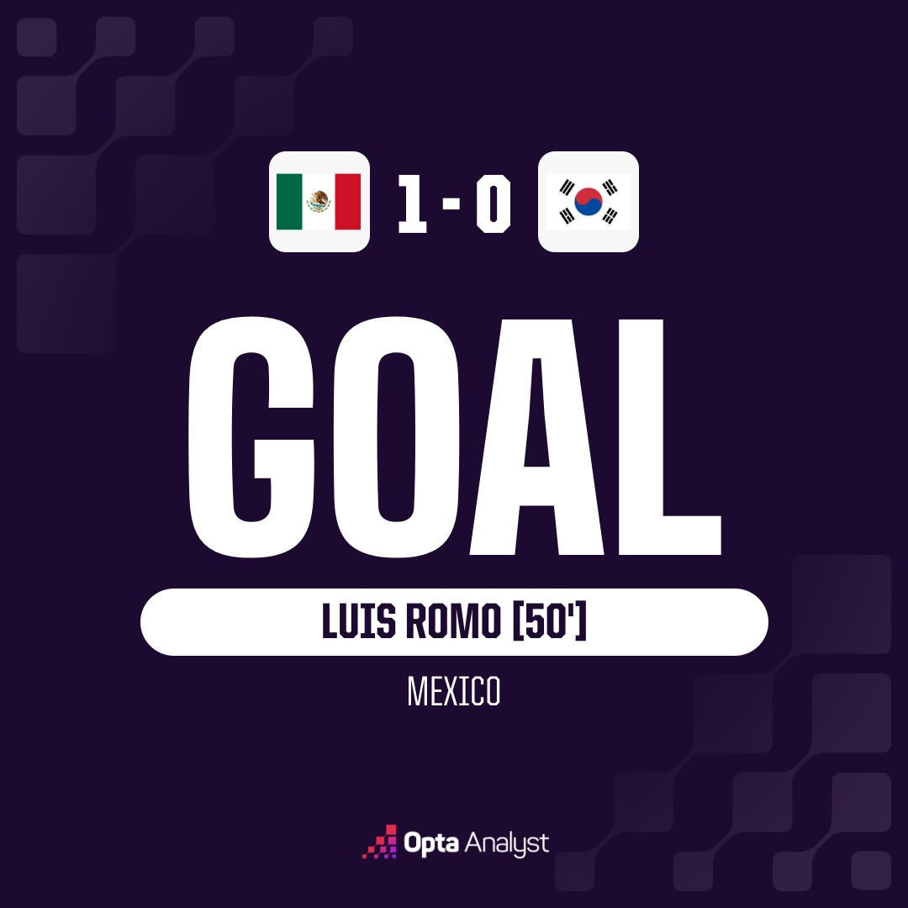
50'
GOAL! Luis Romo scores! Mexico have the lead in this entertaining contest. There is still lots of time left for further drama, but that intervention from Luis Romo has put Korea Rep in a difficult position. Game on!
50'
That might have been going in! A fantastic block from Lee Gi-Hyuk, who gets in the way of a goal-bound effort from Raúl Jiménez. Would the goalkeeper have been beaten? We will never know.
49'
MISS! The score remains 0-0, with Korea Rep relieved after Mexico’s Jesús Gallardo goes for goal but sends their attempt off target. Not one to write home about, that one.
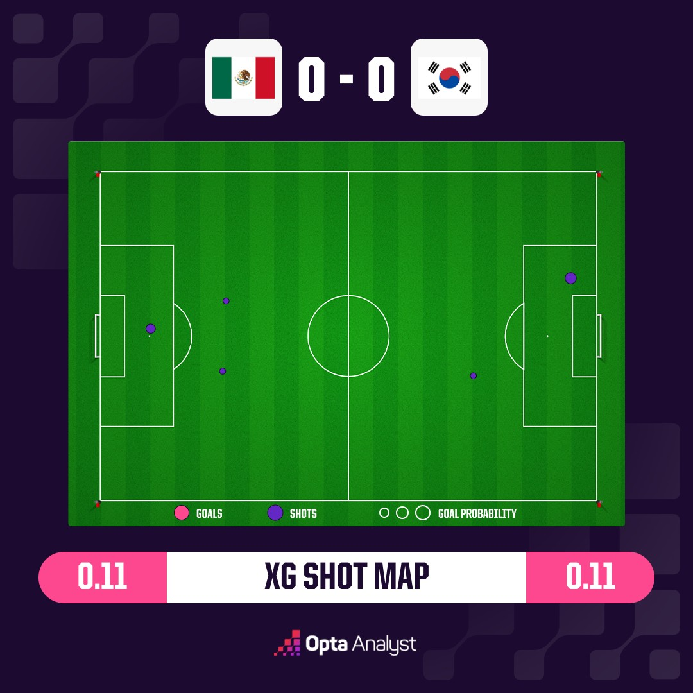
45+5'
Half-time! We reach the interval with the score level at 0-0 between Mexico and Korea Rep. Will we see a winner in the second half?
45+4'
Korea Rep have had plenty of the ball in the last 15 minutes, with 72.59% possession compared to just 27.41 % for their opponents. However, there’s not been any goal to come from that possessional dominance just yet.
45+2'
Érik Lira goes in on Lee Kang-In and concedes a foul. The free-kick is not in a particularly dangerous area from Mexico’s viewpoint, though.
45+1'
A free-kick to Korea Rep, as Jorge Sánchez goes in and fouls Lee Jae-Sung. However, Mexico will not mind giving one away in this area too much, with plenty of distance to their goal.
44'
BLOCK! An intervention from Johan Vásquez might have just prevented a goal, with the defending player getting in the way of an attempt from Lee Kang-In. Solid defending there!
41'
MISS! The score remains 0-0, with Mexico relieved after Korea Rep’s Seol Young-Woo goes for goal but sends their attempt off target. Not one to write home about, that one.
40'
This game is certainly in a bit of a lull now, with neither team having had an attempt at goal in the past 10 minutes. It could do with something to spark it into life. Korea Rep have had more possession during the quiet spell, but are yet to do much with it.
38'
A free-kick to Korea Rep, as Jesús Gallardo goes in and fouls Lee Han-Beom. However, Mexico will not mind giving one away in this area too much, with plenty of distance to their goal.
35'
Mexico are having plenty of the ball, with 70.50% possession in the last 15 minutes. However, they have been unable to transfer that possessional dominance into a goal during that spell, and are not even generating shooting opportunities, so Korea Rep may not be unduly alarmed.
34'
Mexico have had plenty of the ball in the last 15 minutes, with 65.69% possession compared to just 34.31% for their opponents. However, there’s not been any goal to come from that possessional dominance just yet.
32'
The Mexico defence steps up in time and there is a frustration for Seol Young-Woo, who thought they were through until the flag goes up to signal offside.
31'
Offside! Roberto Alvarado thought they were through on goal, but the Korea Rep defence stepped up in time to catch them offside, and the assistant referee puts their flag up.
30'
Neither team has had a shot in the past 10 minutes, as this match just enters something of a down period. Mexico have seen more of the ball, with 66 per cent possession, but Korea Rep are keeping them away from goal. There is still a chance the match will spark into life, though.
29'
The Mexico defence steps up in time and there is a frustration for Lee Jae-Sung, who thought they were through until the flag goes up to signal offside.
20'
Save! A big stop from Kim Seung-Gyu, who reacts to keep out Julián Quiñones's attempt from inside the area.
18'
A rash challenge from Lee Han-Beom, who sends Julián Quiñones tumbling, giving Mexico a free-kick. It is not in a threatening position, but it gives them a chance to get back on the ball.
18'
Not much goalmouth action to speak of in this period of the game, with no attempts made from either side. This game could spark at any moment, however. It is Mexico who have had more of the ball, controlling 62 per cent possession in the last 10 minutes.
17'
That’s offside! A switched-on defensive line from Korea Rep, as they step up at the right time to catch Jorge Sánchez offside, and the assistant referee’s flag is up.
17'
Mexico are having plenty of the ball, with 65.03% possession in the last 15 minutes. However, they have been unable to transfer that possessional dominance into a goal during that period.
16'
That’s offside! A switched-on defensive line from Mexico, as they step up at the right time to catch Son Heung-Min offside, and the assistant referee’s flag is up.
15'
A free-kick to Korea Rep, as Érik Lira goes in and fouls Lee Jae-Sung. However, Mexico will not mind giving one away in this area too much, with plenty of distance to their goal.
12'
A foul from Lee Han-Beom on Julián Quiñones sees Mexico win a free-kick, but it is not in a dangerous position, so Korea Rep should be confident they can defend it easily enough.
7'
No luck! Brian Gutiérrez takes on a shot that, had they got it right, might have been set to test the goalkeeper, but instead it is sent off target and Korea Rep come away unscathed.
7'
That is a disappointing effort from Roberto Alvarado, who went for glory but got their attempt wrong, and the shot sailed off target. A frustrating moment for Mexico.
6'
It’s been tight so far, and Korea Rep are making sure it stays that way with strong defensive discipline and well-timed clearances.
4'
That is a booking for Lee Kang-In, who has received their first yellow card. They are not happy with the decision, but it is done now, and they will have to be careful for the rest of this game.
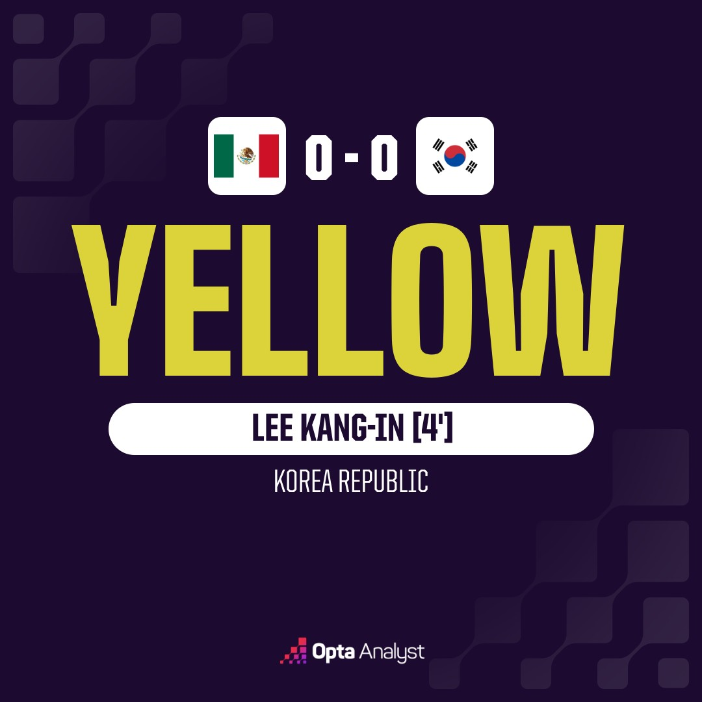
4'
A free-kick to Mexico, as Lee Kang-In goes in and fouls Luis Romo. However, Korea Rep will not mind giving one away in this area too much, with plenty of distance to their goal.
3'
Hwang In-Beom goes in on Julián Quiñones and concedes a foul. The free-kick is not in a particularly dangerous area from Korea Rep’s viewpoint, though.
1'
Offside! Seol Young-Woo thought they were through on goal, but the Mexico defence stepped up in time to catch them offside, and the assistant referee puts their flag up.
1'
We are under way as Korea Rep kick off at Estadio Guadalajara. Let's hope an entertaining contest is in store.
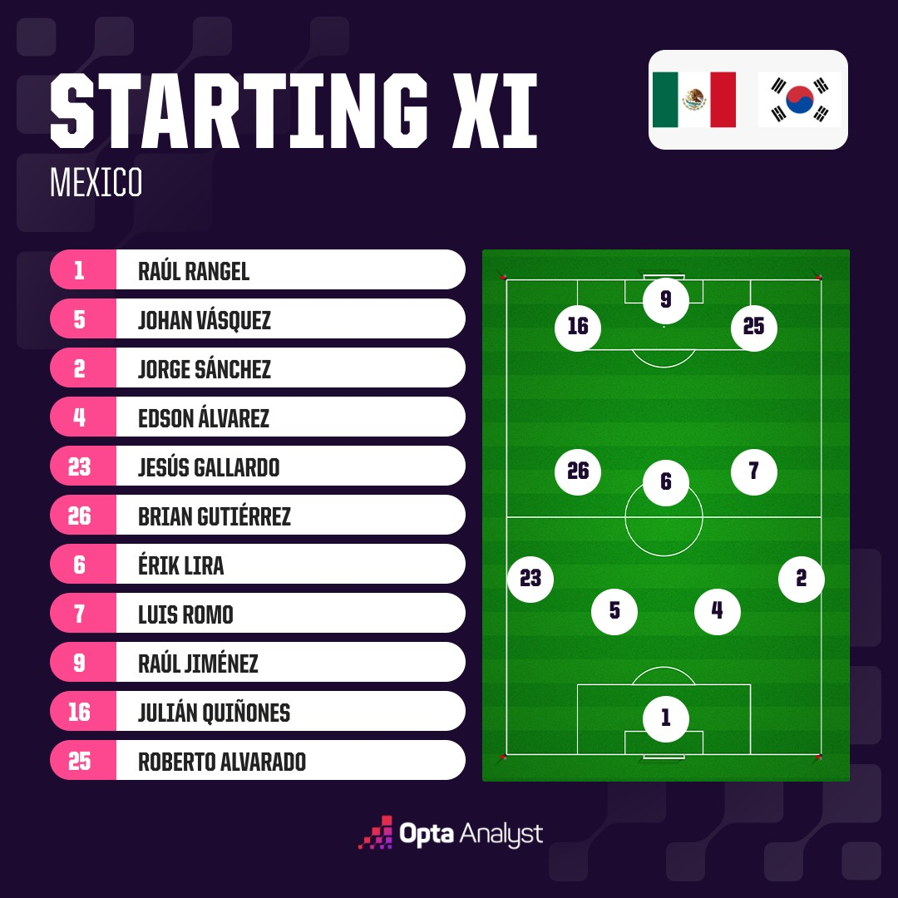
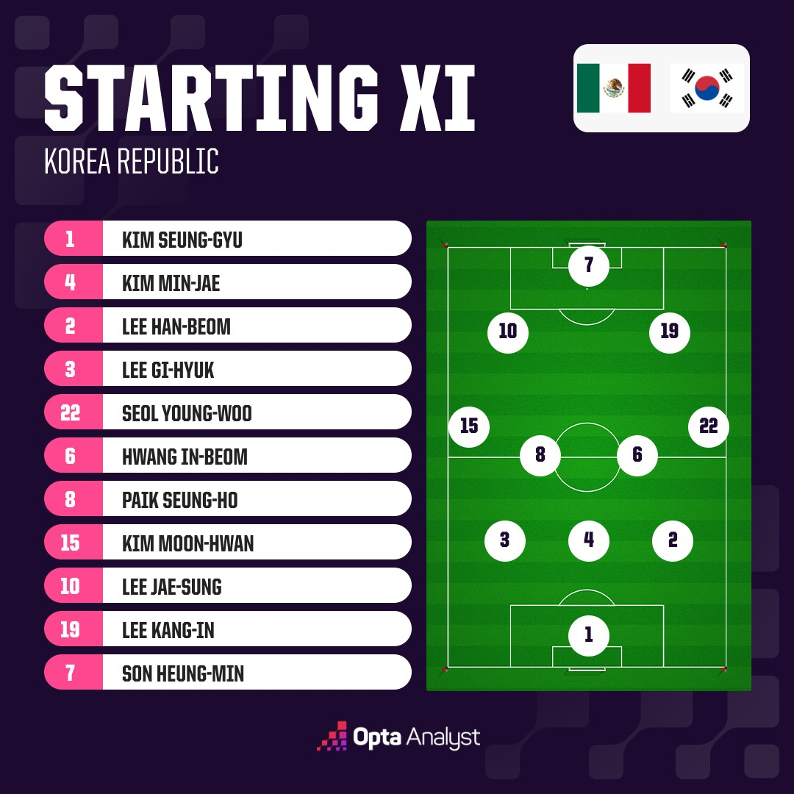
Mexico have kept a clean sheet in the last 4 home matches
Mexico have won their last 3 games when R. Jiménez has scored
There have been fewer than 3 goals scored in total in each of Mexico's last 4 home games
Mexico face Korea Republic on Thursday at Estadio Guadalajara in a clash of teams who are yet to drop points early in the FIFA World Cup group stage.
Mexico's opening World Cup group stage match saw them triumph 2-0 over South Africa on June 11. Julián Quiñones and Raúl Jiménez scored in the win. They are unbeaten in their last nine games in all competitions.
Korea Republic earned a 2-1 victory over Czechia in their opening World Cup group stage game, a June 11 clash at Estadio Guadalajara, their third straight victory. Hwang In-Beom and Oh Hyeon-Gyu were on the scoresheet in the win. In 2026, they have won three and lost two.
Mexico and Korea Republic are first and second in the group, respectively, level on three points. Elsewhere in the group, Czechia are sitting third on zero points. South Africa are fourth on zero points.
The previous fixture between the teams saw them play out a 2-2 draw in a friendly at GEODIS Park last September. Jiménez and Santiago Giménez were on the scoresheet for the Mexican side. Son Heung-Min and Oh found the net for the Korea Republic side.
Quiñones and Jiménez share the early World Cup scoring lead for Mexico after each netting against South Africa. With goals against Czechia, Hwang and Oh are the early leading World Cup scorers for Korea Republic.
In their last six matches in all competitions, Mexico have won four and drawn two. The Mexican side scored 11 and conceded two in that period, scoring first in four of the six contests. A majority of their goals (six) came in the first half, while their opponents netted once in the first 45 minutes. The Korea Republic side have won four and lost two in their last six. The Korea Republic side scored nine and conceded six in that period, netting first in three of the six. They had two goals in the first half, while their opponents netted two times before the break.
-
General
Possession 42.4% 42.37157.62957.6% Possession lost in defensive half 39 394040 Possession lost in middle third 62 626060 Duels 90 909090 Duels success rate 46.7% 46.66752.22252.2% Aerial duels 28 282828 Aerial duels won 53.6% 53.57146.42946.4% Successful dribbles 6 699 Fouls won 7 799 Offsides 3 366 Corner awarded 1 122 -
Distribution
Passes 427 427578578 Long passes 56 566464 Long passes proportion (%) 13.1% 13.11511.07311.1% Passing accuracy 81.7% 81.73384.42984.4% Passes in opponents' half 170 170251251 Passing accuracy in opponents' half (%) 61.8% 61.76573.70573.7% Total passes in the final third 72 72118118 Passing accuracy in final third (%) 54.2% 54.16756.7856.8% Forward passes 246 246315315 Forward passes (%) 57.6% 57.61154.49854.5% Through balls 0 022 Final third entries 43 437272 Penalty area entries 10 101818 Total open play crosses 6 677 Crosses 6 699 Crossing accuracy 66.7% 66.66755.55655.6% -
Attack
Goals 1 100 Shots 8 899 Shots on target 4 422 Blocked shots 1 133 Headed shots 2 244 Shots outside the box 3 333 Shots inside the box 5 566 Shots accuracy excluding blocked shots 57.1% 57.14333.33333.3% Shooting accuracy 50.0% 5022.22222.2% Key Passes 6 666 -
Defence
Tackles 14 141717 Tackles success rate 50.0% 5058.82458.8% Clearances 20 201212 Interceptions 6 655 Recoveries 50 505151 Attacking third recovery 3 355 Defensive third recovery 21 212929 Midfield third recovery 26 261717 Recoveries in attacking half (%) 6.0% 69.8049.8% -
Discipline
Fouls conceded 9 977 Yellow cards 0 022 Red cards 0 000